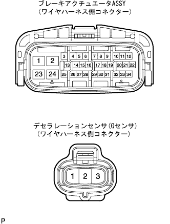
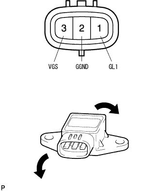

DTC C1243/43 G Sensor adhesion |
DTC C1244/44 G Sensor disconnection or short |
DTC C1245/45 g sensor output |
| DTC No. | DTC detection conditions | DTC output -related items |
|---|---|---|
| C1243/43 | Deselation sensor (G sensor) does not change between 30 km/h and 0 km/h, 16 times or more |
|
| C1244/44 | Deselation sensor (G sensor) disconnected or short state continues for 1 second or more |
|
| C1245/45 | With a car speed of 30 km/h or more, the difference between the front and rear G calculated from the G sensor value and the front and rear G, which is calculated from the vehicle speed, continues for 60 seconds or more. |
|
| Step 1 | Freeze frame data confirmation |
Use SST (Tascan) to check the freeze -frame data of the output value of the deselation sensor (G sensor) when dial cord memory.(The point isreference)
| Item name | Output item | situation | standard |
|---|---|---|---|
| Front and rear G | Express the value of the G sensor -1.875-1.875G |
|
|
Record the vehicle status at the time of diag code memory.
| GO | |
| Step 2 | ECU data monitor inspection (G sensor) |
Stop on a flat road and check the output value of the deceleration sensor (G sensor) using SST (Tascan).(The point isreference)
Inspect the change in the output value of the deceleration sensor (G sensor) when driving at low speed and performing strong braking.
If the output value does not change due to brake braking, perform the following inspection.
Remove the deselation sensor (G sensor) from the floor panel.
Tilt the sensor in front and rear directions to inspect the change in the output value.
|
| ||||
| NG | |
| Step 3 | Wire harness and connector inspection (brake actuator Assembly -Deceleration sensor [G sensor]) |
Inspect that there is no problem with the brake actuator asser Assembly and the deselation sensor connector.
Turn off the IG switch and disconnect the brake actuator asser Assembly and deceleration sensor connectors.
Inspect that there is no deformation or corrosion on the case and terminals of the connector.
|  |
Use SST (Toyota Electrical Tester) to inspect the wire harness between the brake actuator asser ← → deceleration sensor (G sensor).
| Inspection terminal [Brake actuator ASSY ← → deceleration sensor (G sensor)] | Conduction |
|---|---|
| 28 (VGS) ← → 3 (VGS) | can be |
| 4 (GL1) ← → 1 (GL1) | can be |
| 7 (ggnd) ← → 2 (ggnd) | can be |
| Inspection terminal [Brake actuator asser] | Conduction |
|---|---|
| 28 (VGS) ← → Body Earth | none |
| 4 (GL1) ← → Body Earth | none |
| 7 (GGND) ← → Body Earth | none |
|
| ||||
| OK | |
| Step 4 | Deceleration sensor single inspection |
Deselation sensor (G sensor) Power supply voltage inspection
Check if there is any problem with the mounting status of the deceleration sensor (G sensor) and the connector.
Check the voltage between the 3 terminals (VGS) of the connector (VGS) ← → body ground while connecting the connector of the deceleration sensor (G sensor).
Cut the connector of the deceleration sensor (G sensor).
Inspect that there is no deformation or corrosion in the connector case and terminal.
Deceleration sensor single inspection
Connect a 1.5 V battery in three rows per bottle.
|  |
Connect the battery plus to the 3 (VGS) terminal of the connector, the negative of the dry battery to the 2 (GGND) terminal, and add a 4.5 V voltage between the 3 (VGS) ← → 2 (GGND) terminals.
Check the output voltage of the 1 (GL1) terminal under each condition.
| Sensor condition | Output voltage |
|---|---|
| Horizontal state | Approximately 2.5 V |
| Tilt back and forth | It fluctuates between about 0.5-4.5 v |
| OK | To step A |
| NG (sensor power supply voltage abnormality) | To step B |
| NG (abnormal sensor output value) | To step C |
|
| ||||
|
| ||||
| A | |
| Step 5 | Diagnostic code erasure |
Erase the diagnostic cord.(The point isreference)
| GO | |
| Step 6 | Diagnostic code reconfirmation |
Run and repeat the braking test based on the interview and freeze frame data, and reconfirm the diagnostic code.(The point isreference)
| normal | To step A |
| Abnormal code | To step B |
|
| ||||
| A | ||
| ||